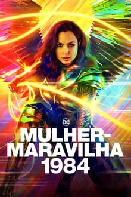
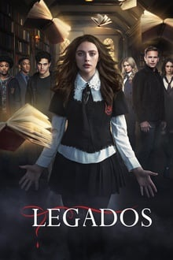
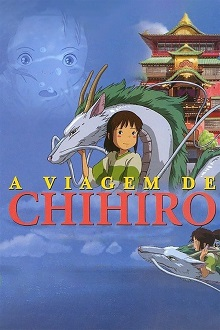
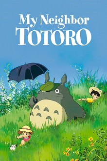
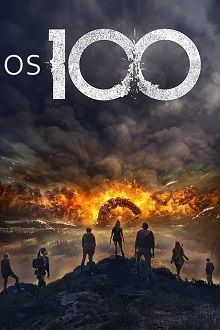

The Originals
Assista a temporada 2 agora
O vampiro Klaus retorna a Nova Orleans, que sua família ajudou a construir, para investigar rumores de uma
conspiração contra ele, nesta série baseada em "The Vampire Diaries". Ele encontra seu antigo protegido,
Marcel, que reina poderosamente sobre os seus habitantes, causando uma tensão crescente na comunidade
sobrenatural. Klaus e seu irmão, Elijah, descobrem que o lobisomem Hayley caiu nas mãos de uma bruxa. Klaus
e Elijah pretendem recuperar a cidade e, enquanto esperam para ver se o seu irmão, Rebekah, vai deixar
Mystic Falls para se juntar a eles, decidem formar uma aliança com as bruxas para ajudar a promover sua
causa.
Continutar assistindo como William






